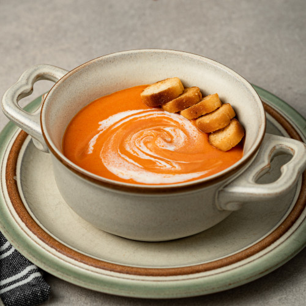
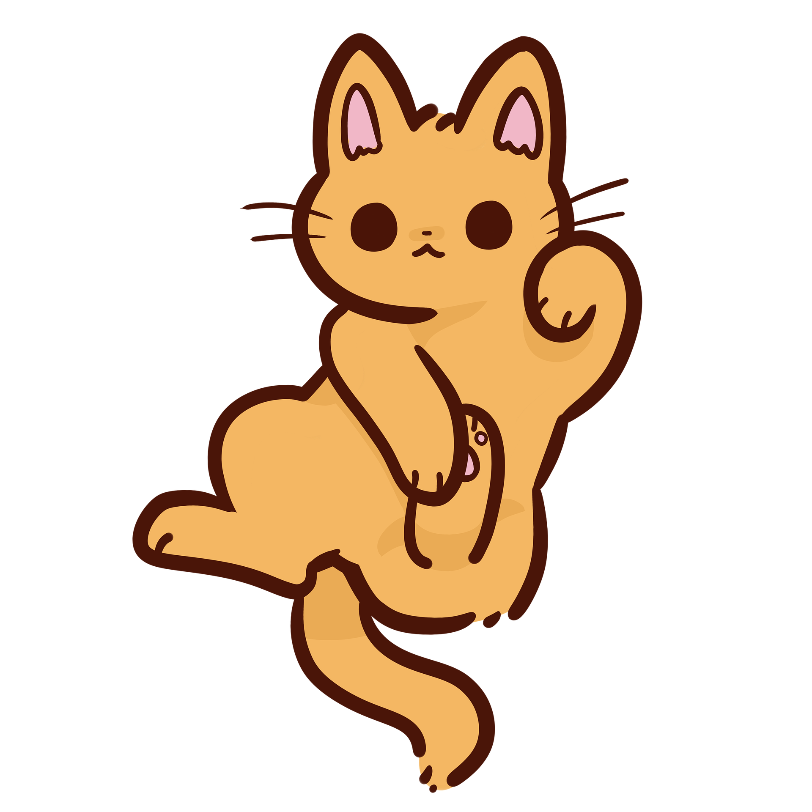
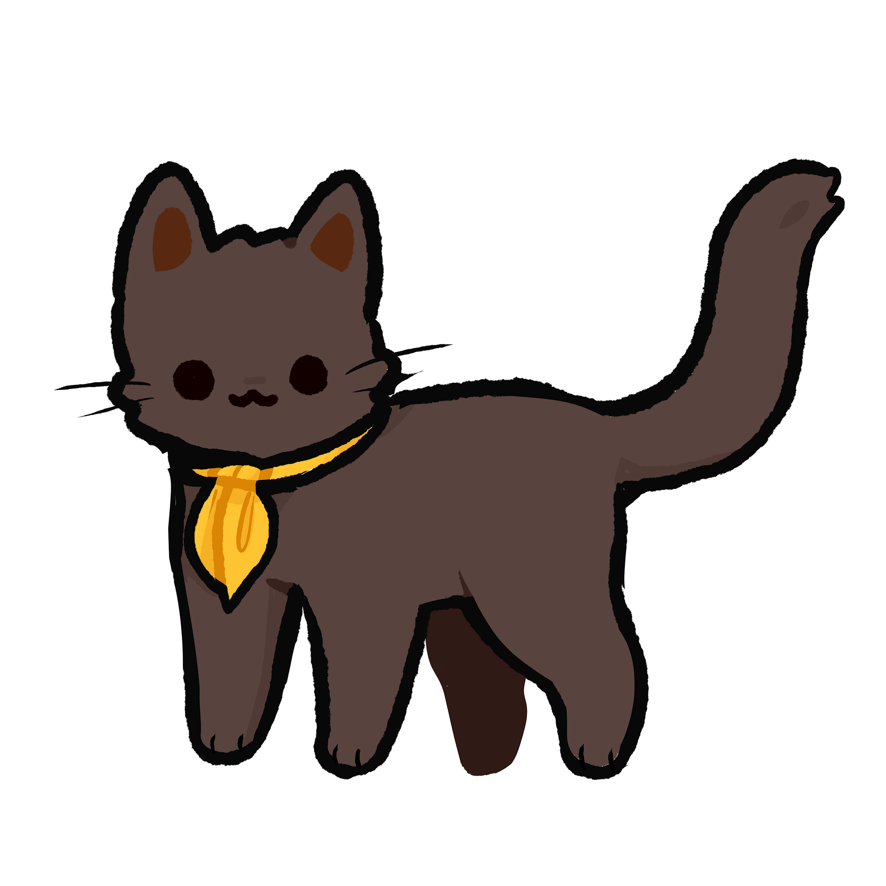
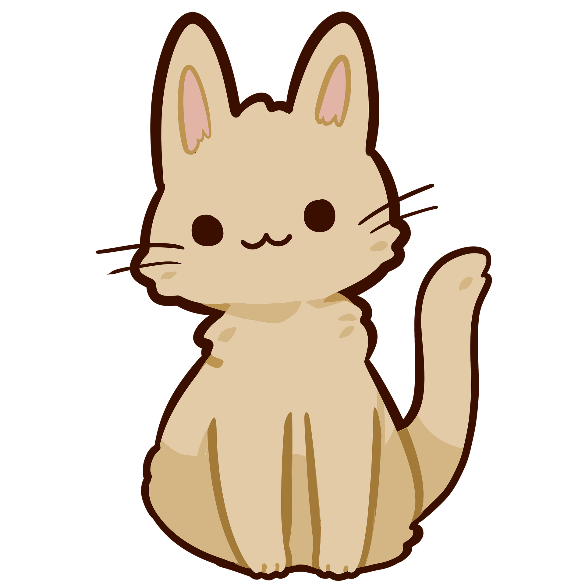

Products We Sell
French Vanilla Coffee
A caramelized coffee rich in flavour.

Pumpkin Spice Coffee
A coffee to experience autumn.
Bagel
A bagel to start off your day.
Cats We Have

Pepper
Pepper is a very sweet girl. She will do best in a quiet home that will show that the world isn't such a scary place.
Adopt

Milo
Milo came into the shelter as a stray, he is friendly adaptable cat who is ready for his forever home!
Adopt

Snowball
This fine fellow will wow you with his big brown eyes and his mellow attitude who is excited to see his new home!